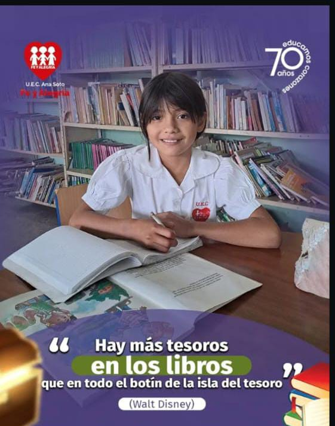

Canchas y Patios: Laboratorios de Convivencia
Estos espacios son vitales para fomentar valores transversales como el trabajo en equipo, la disciplina, la tolerancia y el respeto por las reglas. Las actividades deportivas son el lugar donde se aplica la convivencia escolar de forma práctica, esencial para el desarrollo humano de nuestros futuros técnicos.

La Biblioteca: Un Espacio para la Mente y el Encuentro
No solo es un centro de consulta para las especialidades, sino un refugio de calma y un punto de encuentro para la lectura recreativa y el pensamiento crítico. Se utiliza para fomentar la curiosidad, una habilidad crucial para la resolución de problemas en el ámbito técnico y administrativo.
Bienestar y Soporte Integral
Garantizamos el bienestar integral de la comunidad con una sólida red de soporte que incluye: Soporte Emocional y Psicológico, Psicopedagogía para la optimización del aprendizaje, y el servicio de Comedor Escolar que promueve la nutrición y la convivencia.